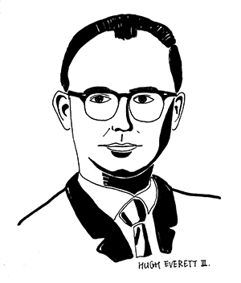

多世界理论

多世界理论是埃弗里特（Hugh Everett III, 1930 - 1982）在1957年提出的. 这个理论的核心是：量子理论是一个自洽的理论，不需要借助经典概念和任何额外的假设就能描述和解释一切现象，包括我们日常生活感受的经典世界和量子测量。根据这个理论，波包永远也不会塌缩，任何物体无论大小都是量子的，都可以用波函数描述。 整个宇宙的波函数Ψ可以写成很多个分量的叠加
Ψ=φ1+φ2+...+φn+...,
其中的每一个分量φn代表一个平行世界，这些平行世界真实存在、平行演化、互不干扰，偶尔发生干涉。
对多世界理论持反对意见的人其实无法给出任何令人信服的理由，主要是心理上无法接受其他平行世界的存在。
如果你已经学过量子力学，建议你一定要先读读埃弗里特的博士论文
这篇论文比较长，而且有一些不常用的数学符号。如果想尽快大致了解多世界理论，可以阅读我写的缩减版
这篇是我写的关于多世界理论的科普文章